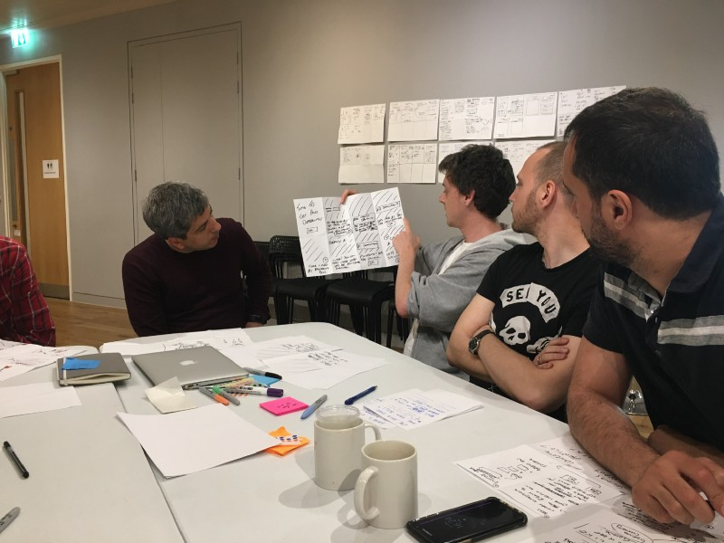
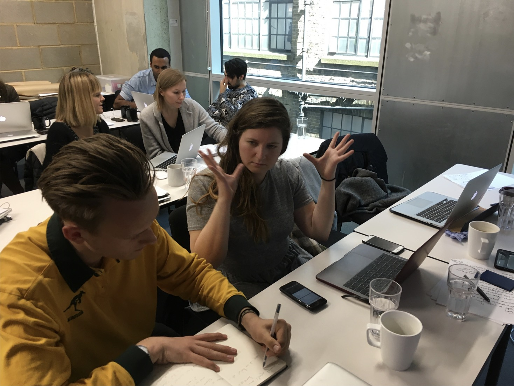

Squirrel is a bank account, controlled by an app, aimed at making managing your money easy. It does this by putting your bill money to one side until bills are due, and also by setting money aside for savings goals as soon as you’re paid. Any other money
left over is yours for spending.
The Brief
The client asked us to look at and improve their onboarding, signup and setup process. A number of users had downloaded the app which had a rather long onboarding and setup process. Users were skipping through this onboarding and then, on first using
the app, didn't really understand how to use it. The result of this was they never continued using Squirrel.
Tools and Techniques
Competitor Analysis, Surveys, User Interviews, Personas, User Journeys and Experience Maps, Design Studio, Design Workshops, Paper Prototyping, Wireframing in Sketch, InVision Prototypes, User Testing, Design Specifications.
Approach
Screener Survey
Because Squirrel is aimed at millennials who struggle to manage their finances or save money these were the people we targeted in our screener survey in order to get users in for interviews and user testing.
User Interviews
We had multiple goals regards what insights to gain from potential users which will become apparent when I explain the three types of studies we performed.
Firstly, we asked questions about people’s overall attitude to money management and how they feel about using apps to help with this.
A second form of study was conducted on current Squirrel customers to uncover what factors had driven them to complete the setup process where others had failed.
The third user study was semi-contextual, where we would sit with people without much exposure to Squirrel and observe how they got on with the current onboarding process, mapping their tasks out on an experience map.
Insights
While the user interviews were good for general insights and generating user personas, the analysis of users of the currrent onboarding process had identified some major pain points which were as follows:
i) Issues of trust with using a product that asks them for their personal data, specifically bank details, when they had never heard of the product before.
ii) Users not really understanding the service and the product before being asked to sign up.
iii) Users not fully understanding the features of the app when being prompted to set-up/activate.
iv) The disconnect and confusion between the sign-up (entering email and password) and then many steps later entering income, outgoings and bank details.
Design Studio
We ran a design workshop at the Squirrel offices to involve their team with us and help come up with initial sketches and ideas. The main problems we focussed on were the four afforementioned pain points.

Designs, Prototypes and User Testing
Starting with paper prototypes we iterated through designs, testing on users and then improving designs and increasing the fidelity on the next generation of prototype.
There were a number of things we had to experiment with - the copy we used, experimenting with diagrams to communicate things visually, informing users exactly where they were in the whole process, how many screens and the right balance
of copy to use, etc.
We were guaging each design by observing how successfully users completed onboarding and set-up with each prototype and then asking users to answer some fixed questions to prove they had understood the service, how the app works and what
ot expect next.
Final Designs
Our final redesign saw the following changes, all validated by the last rounds of user testing.
Signup and activation were merged to form a shorter and more fluid end to end user experience therefore doing away with the confusion between signup (entering email and password) and activation (entering income and outgoings and then asking for bank details).
By using a combination of short copy and simple diagrams we were able to explain the service within 3 slides. Following that were 4 slides explaining how to use the app to set-up, again using short copy but this time including images of the various screens
within the app so the user could see things in context. These slides appeared long before asking the user to enter emails, passwords, bank details etc.
We managed to mitigate the trust issues simply by highlighting within the first screen that their funds were ring fenced and underwritten by a well know bank, placing said bank’s logo in clear view along with highlighting that Squirrel was approved and
regulated by the FCA governing body.
On asking for a user’s bank account details the app now clearly explains that this is so Squirrel can pay money into the user’s current account rather than take money from it without any authorisation.
Finally, by including some contextual comments when a user first runs the app post onboarding we were able to remind and encourage the user to fill out the relevant income, outgoings, spending and saving fields necessary to start seeing the benefits of
Squirrel.
Deliverables
Design Specification
Personas, User Flows, Site overview diagrams, Wireframes and Mockups, Styleguide, high fidelity Prototype.
Project Presentation
Insights that led to the solution, sketches and proof of the ideation process, proof of multiple design iterations, key screens and concepts.
Next Steps
i) Investigate the use of emails, SMS and Push Notifications to inform users of what to expect next or to encourage them to continue adding income, outgoings and savings goals.
ii) Looking into multivariate testing to try out different versions of icons and copy on the 3 screens that explain the service and product.
iii) Look into the use of animations as an alternative to the 3 'how the service works' screens mentioned above.
iv) Look at the app store summary page to bring it in line with our redesigned onboarding process.
AirFrance
Enhancing the in-flight services experince through an app
Date: April 2017
Client: AirFrance/General Assembly
Service: UX Design
Introduction
Air France, stylised as AIR FRANCE, is the French flagship carrier - serving 36 destinations in France and operates scheduled passenger and cargo services to 168 destinations in 93 countries.
The Brief
Integrate Air France’s current, in-flight services into a mobile first, responsive website or a native mobile or tablet application.
Tools and Techniques
Feature Comparisons, Surveys, User Interviews, Personas and User Journeys, MoSCow Method, Design Workshops, Paper Prototyping, Wireframing in Sketch, Prototyping in Marvel and InVision, User Testing, Design Specifications.
Approach
Competitor Analysis
The first things we wanted to understand was the current market space and how Air France’s competitors had enhanced In-flight entertainment using apps. As it happened any app offerings from competitor airlines were quite limited in the
services they support.
Surveys
We also learnt early on through online surveys that mobile is by far the most used device on flights, followed by laptop, tablet and eReader. This was already hinting at the kind of device we should be designing for (mobile first).
User Interviews
We wanted to interview a number of users from different backgrounds and with different goals and reasons for flying. We were ideally after those that had flown recently so we could learn about their varied experiences while they were fresh in their heads.
I contextual study would have been preferred but practicalities and budget didn’t allow this.
Early on in the interview process two things became clear. Firstly, you have short haul and long haul flights and flyers have lower expectations and higher tolerances of poor in-flight services when on short haul flights compared to longer haul flights
where a number of irritants or inconveniences can have a compound negative affect on mood over the flight.
The other thing that emerged was the bulk of our flyers fell into two main categories of flyers and each of these categories has different needs. These categories were the casual holiday maker, and the business flyer. We also arranged
interviews with a number of flight attendants, recognising how integral they are to the user experiences of the flyers (as raised by our earlier interviews with flyers).
Personas
We created three personas - one for the casual holiday flyer, one for the business flyer and one for the flight attendant. It’s worth pointing out some of the key differences between the needs and goals section of the business flyer and the casual flyer.
The business flyer needs swift transport to and from airports, a good working environment in the airports and on flights, and the ability to manage jet lag effectively (i.e. A good sleeping environment). The holiday flyer on the other
hand needs an interesting movie selection, an easy to browse movie selection and food she can trust. The persona for the flight attendant needs to carry out their flight services without being overtired so managing their sleep before
flying was important. They also have a major pain-point with customers who overuse the call bell on-flights.
User Journeys
Following the personas we created a three layer user journey experience map of a mid to long haul flight. Interestingly this revealed some shared/common pain points in the flight experience.
We ran a prioritization and estimation session to decide what problems to focus on. These were improving the food and drinks service, improving the entertainment service and improving the summoning of an attendant.
Designs, Prototypes and User Testing
From early in-flight app sketches and paper prototypes we kept returning to our two types of flyers for testing - observing them as we set them scenarios like ordering and paying for additional drinks and snacks. Through iteratively stepping
up the fidelity we would go through the process of design, prototype and test on users - going through between one and two iterations a day with user testing taking up the bulk of the time.

An area of our designs that we kept revisiting was getting the information architecture and taxonomy right such as having a 'Menu' category and a 'Snacks & Drinks' category side by side which confused users with them commenting that Snacks
& Drinks are part of a menu. We responded by relabelling to 'Meals' and 'Snacks & Drinks' in later designs. Another example was when pre-ordering meals, after selecting a meal there was a button labelled 'Order' but some users were expecting
the meal to be delivered imminently which was not the case due to the fixed serving times on the flight. This resulted in us relabelling this button to 'Pre-order'
The final designs we delivered included features such as ordering additional drinks and snacks directly from the app (and paying for them digitally) and also to select content (TV/Movies) to watch via the app and then play that selected
content on the built-in screen embedded into the backs of the seats in front of the passenger.
There was also the ability to order and purchase duty free items from the app,
Another notable feature was to summon an attendant via the app (this was more for accessibility purposes because some flyers, especially the elderly ones, had expressed that they often struggled to reach the flight attendant call button).
Deliverables
Design Specification
Personas, User Flows, Site overview diagrams, Wireframes and Mockups, Styleguide, high fidliety prototype
Project Presentation
Insights that led to the solution, sketches and proof of the ideation process, proof of multiple design iterations, key screens and concepts
Next Steps
With more time we would like to have explored the following:
i) How to integrate this app with an app used by the crew.
ii) Expand on other features we had to drop due to time constraints (e.g. playlisting movies for a flight long before you depart).
iii) Explore cultural considerations such as a clear indication that meals and snacks meet various cultural and religious requirements.
Growing Garden Supplies
A gardening supplies shopping website.
Date: March 2017
Client: General Assembly
Service: UX Design
Introduction
Growing Garden Supplies is a small, independent Garden Supplies store based in East London since 1982. It is hypothetical but it is based closely on a real garden supply centre in the same locality.
The Brief
To create a desktop first, interactive prototype for a website for Growing Garden Supplies - a small, independent Garden Supplies store based in East London since 1982. To focus on designing the experience of shopping online. Match the
user personas, business goals and brand values of the company.
Tools and Techniques
Competitor Analysis (including Feature Comparisons and Heuristic Comparisons), User Interviews, Concept Mapping, Personas, User Journeys, Feature Prioritisation, Information Architecture (Open & Closed Card Sorting), Design Workshops,
Sketching, Paper Prototyping, Wireframing in Omnigraffle, Marvel and InVision Prototypes, User Testing.